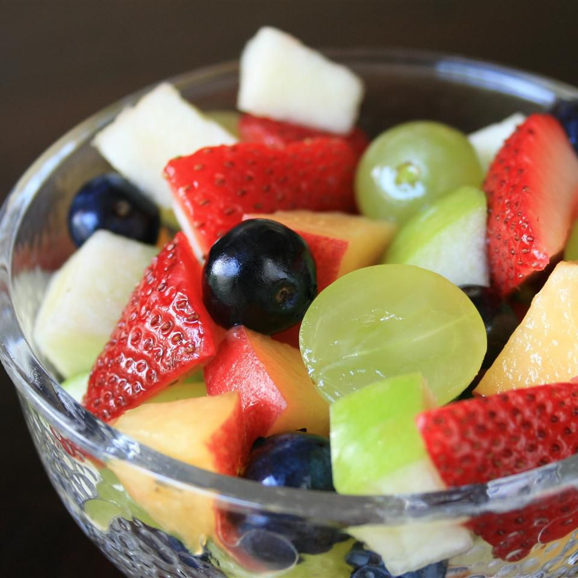

Fruit Punch Fruit Salad
This fruit salad actually tastes like fruit punch! A healthy treat for anytime
of the day or even for dessert.
"I eat fruit everyday, and this tastes like the punch I used to have as
a kid!" Adam, Boulder, Colorado

Ingredients
1 cup green grapes, some halved and some whole
8 fresh strawberries, chopped
1 fresh peach, chopped
1 1/2 cup fresh blueberries
1/2 Granny Smith apple, chopped
1/2 orange, juiced
2 TBPS chopped mint, optional
Instructions
- Mix grapes, strawberries, peach, blueberries, and apple together in a bowl.
Pour orange juice over fruit salad and stir.
- If using mint, sprinkle on top.
Explore the other lettuce-free salads